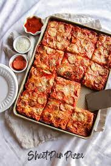

Oven Pan 'Pizza'

Ingredients
- White Bread
- Tomato Sauce
- Grated Cheese
- Bacon
- Onion
- Green Pepper
- Olives
Steps
- Preheat oven to whatever degrees Celcius idk
- Cover pan in parchment paper
- Lay down slices of white bread until bottom of pan is filled
- Spread Tomato Sauce on bread, and then three quarters of the Cheese on top of the Tomato Sauce
- Add literally everything else (evenly) and then add the rest of the Cheese on top
- Bake until it's cooked but not burnt